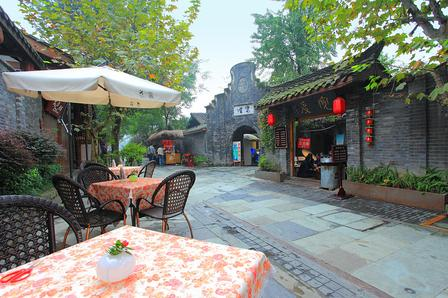
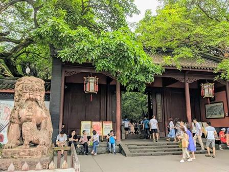
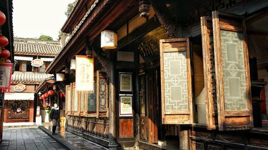

探索千年蜀都

宽窄巷子
由宽巷子、窄巷子和井巷子平行排列组成，这里保留了清朝古街道的建筑格局，是体验成都慢生活与盖碗茶文化的绝佳去处。

武侯祠
中国唯一的一座君臣合祀祠庙，纪念诸葛亮与刘备。红墙竹影是这里的标志性景观，也是感受三国文化的必去之地。

锦里古街
紧邻武侯祠，以明末清初川西民居作外衣，三国文化与成都民俗作内涵，夜晚红灯笼亮起时，极具古风意境。

由宽巷子、窄巷子和井巷子平行排列组成，这里保留了清朝古街道的建筑格局，是体验成都慢生活与盖碗茶文化的绝佳去处。

中国唯一的一座君臣合祀祠庙，纪念诸葛亮与刘备。红墙竹影是这里的标志性景观，也是感受三国文化的必去之地。

紧邻武侯祠，以明末清初川西民居作外衣，三国文化与成都民俗作内涵，夜晚红灯笼亮起时，极具古风意境。